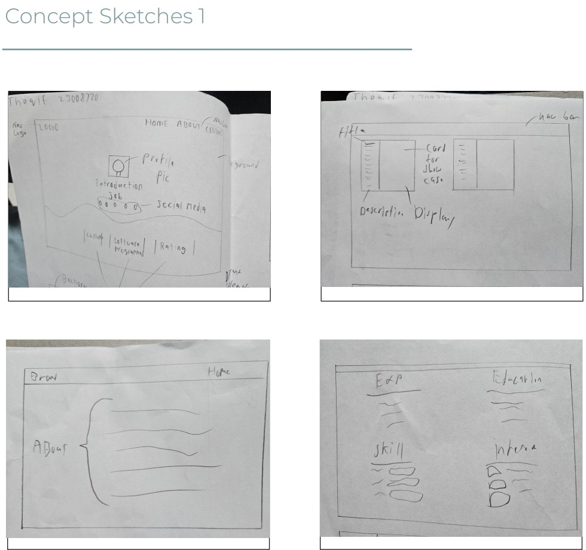
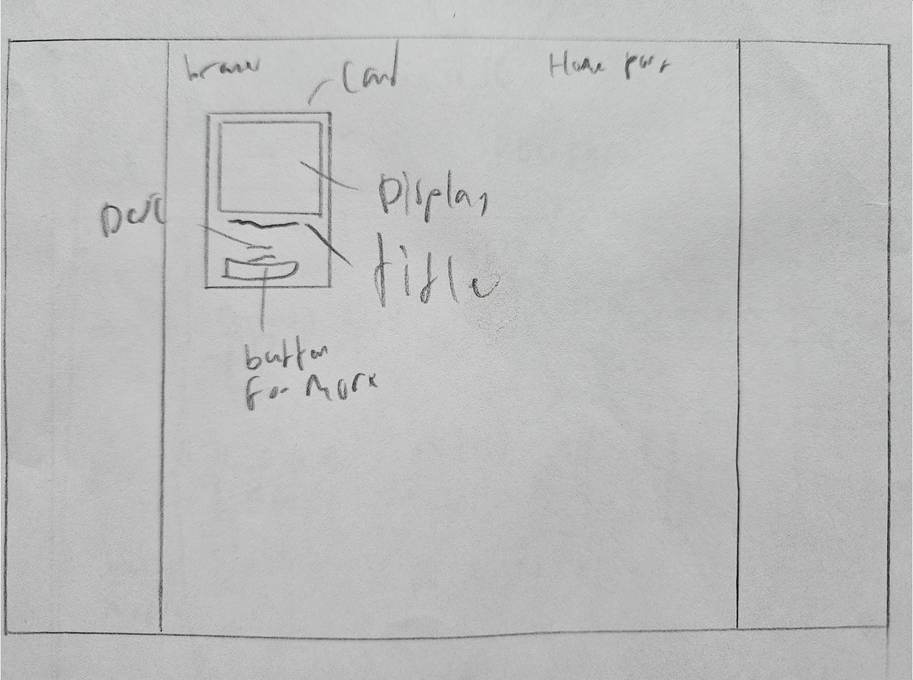
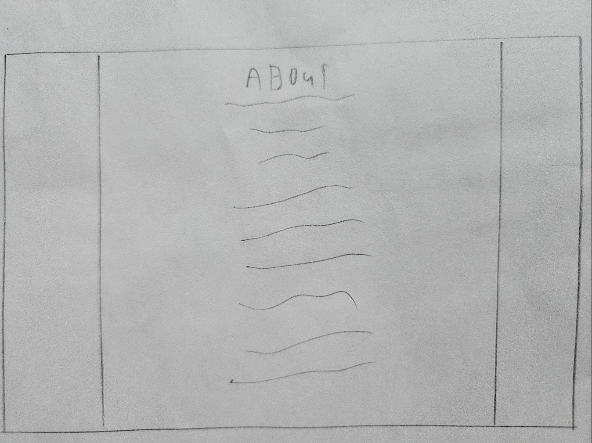

Concept arts
Concept art 1 to 6 for Name Card
Concept art 1 to 5 for Sticker Chat
Concept art 5 to 10 for Sticker Chat
Concept art 1 to 3 for Portfolio
Concept art 3 to 6 for Portfolio
Concept art 6 to 9 for Portfolio
Name Card
Name card front
Name card back
Design Rationale
A simple intro page embellished with decorations.
I decided to make my name bigger than everything else to let my employer know my name first before exploring.
Other elements are included such as greeting and professions to quickly communicate that I am polite and friendly and that I have the skills you look for.
With all these in mind, it will hopefully entice the employer to look through my portfolio.
Sticker Chat
Home page
Portfolio page
About page
Resume page
Contact page
Design Rationale
I drew a bird to represent myself because I desire to be free like a bird.
Furthermore, it metaphorically represent the creative freedom of programming because there are many ways to approach it.
Additionally,
Portfolio
Concept art for home page
Home page
Design Rationale
A simple intro page embellished with decorations.
I decided to make my name bigger than everything else to let my employer know my name first before exploring.
Other elements are included such as greeting and professions to quickly communicate that I am polite and friendly and that I have the skills you look for.
With all these in mind, it will hopefully entice the employer to look through my portfolio.
Concept art for portfolio page
Portfolio page
Design Rationale
A showcase of my works.
The card has a title below the image, a summary below the title and a button to click for more details.
Everything included here is related to my profession ranging from website design to programming to graphic designs.
All three categories have their purpose; To showcase my creativity and skills to the employer looking through my portfolio.
Concept art for about page
About page
Design Rationale
The main focus is on the text as I want my employer to read through my paragraphs as they show my upbringing, education, motivation and my personal life.
This is also the opportunity to sell myself and show my employer that I am a good fit for their company culture and how my thinking lines up with theirs.
Concept art for resume page
Resume page
Design Rationale
A showcase of my experiences, educations, skills and interests.
A way to show the employer how qualified I am through looking through the resume page.
The design should not detracts too much from these main four components I want to show other than making it looks nice.
Concept art for contact page
Contact page
Design Rationale
A simple contact page embellished with decorations to make it look nicer.
The main focus should be on the contact form so the design make it looks like it is enveloping the form.